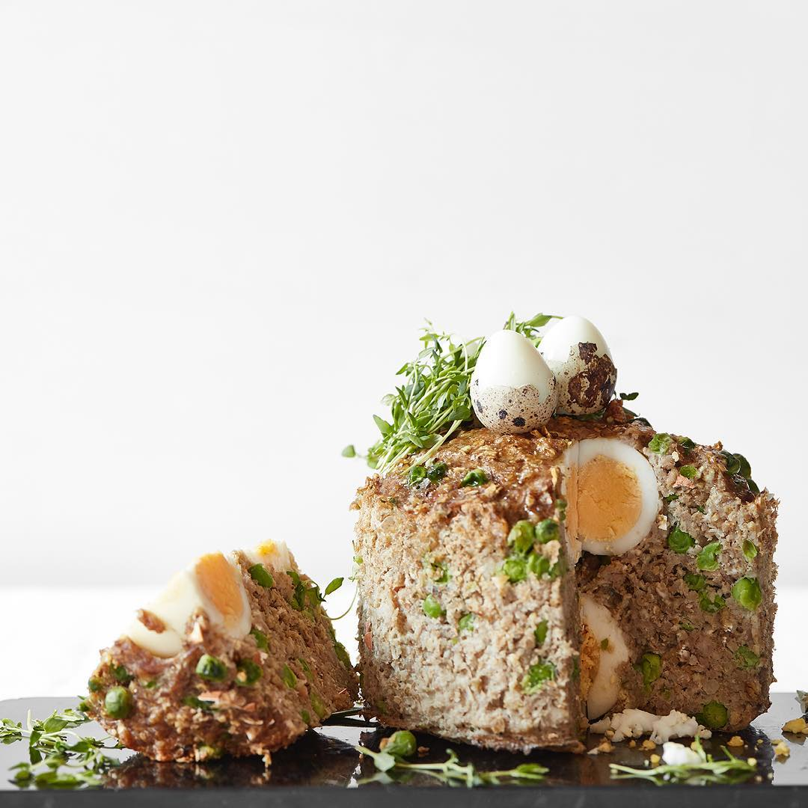

Mäsový nákyp podľa @funky_dog_cz — Normy Jedál
🐣🌻🍖 Co chystáte pro svého čtyřnohého kamaráda na Velikonoce? Vyskoušejte jednoduchý recept, který bude zaručeně chutnat. •
Masový nákyp •
Podle příležitosti volte formu – na výlet můžete nákyp upéct ve formičkách na muffiny, na oslavu se líp hodí vyšší dortová forma.
Citlivé pejsky může vajíčko akorát trochu nadýmat, takže mu dejte menší porci. Aminokyselina tryptofan v krůtím mase zase pomáhá mozku s produkcí serotoninu, hormonu štěstí.
•
Co budeme potřebovat (850 g nákypu): • 5 vajec • 5 snítek oregana • 500 g mletého krůtího masa • 100 g mraženého hrášku • 50 g ječných vloček • 1 lžička oleje na vymazání • 2 křepelčí vejce na ozdobu • pár snítek tymiánu na ozdobu
Postup:
1. Tři vejce uvařte natvrdo, od bodu varu to trvá 10 minut.
2. Pekáček vymažte olejem. Zbylá vejce zlehka prošlehejte. Většinu oregana nasekejte nahrubo. Vejce a bylinky promíchejte s masem a hráškem. Zahustěte vločkami.
3. Troubu předehřejte na 180 °C. Vařená vejce slijte, propláchněte studenou vodou, nechte 5 minut stát a oloupejte.
4. Polovinu masové směsi rozložte do formy, do středu položte oloupaná vejce, zakryjte zbylou masovou směsí, vložte do předehřáté trouby a pečte zhruba 45 minut dozlatova.
Vyjměte, nechte zchladnout a krájejte na plátky. Nákyp můžete ozdobit natvrdo vařenými křepelčími vejci a zbylým oreganem a snítky tymiánu.
#nestekejajez #velikonoce #masovynakyp #pamlsky #pamlskypropsy #stedranadilka #svatky #velkanoc #pejsek #czechdog #slovakdog #varimezdrave #varimeslaskou #foodblog #fordogs